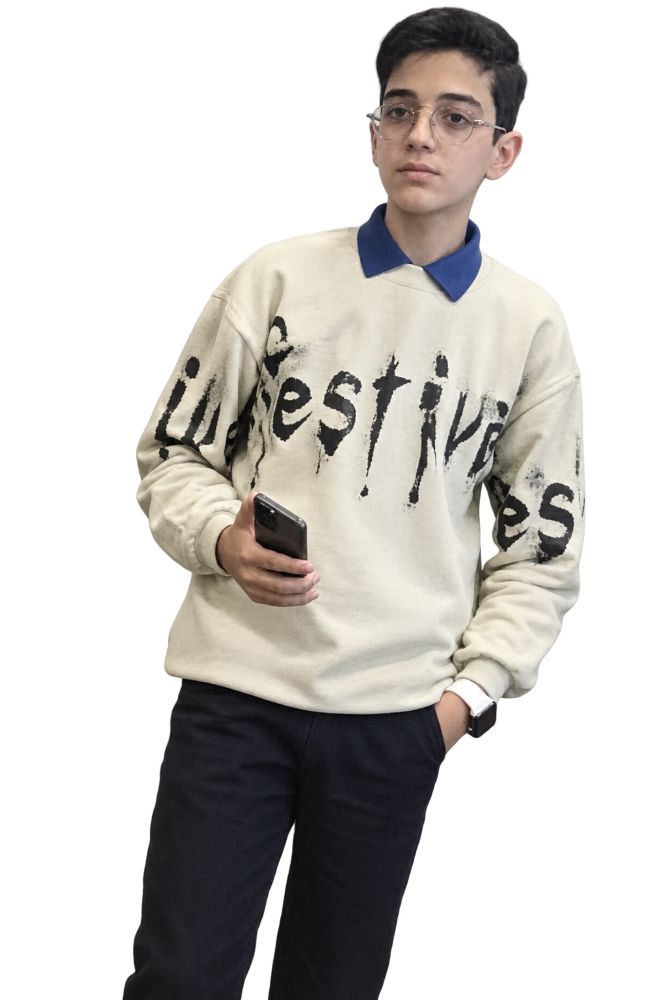

AmirAli - TapanDev © 2026 Official Website.
اهم... قراره، کراش بزنی
خب خب خب...
قراره کسایی رو بهت معرفی کنم که، برای من تا الان فقط ظاهر نبودن !
سازنده ی بهترییییننن خاظره ها، لحظه ها و حتی خنده های به یاد موندنی ان لامصبا .
از حق نگذریم، بد خوشگلنااااا !!!
والا... بزار اینجوری بگم که، این دو برادر، تا به الان اتفاقاتی توی زندگیم ایجاد کردن که، سطح انگیزه، شاد بودنم و حتی بحث احساس رو، چندین برابر کردن... بخدا که هرچی ازشون بگم کمه برار ! چون ماشالا تبارکاالله، غیر از ظاهر پر ملات، باتن روشنی هم دارن ! دیگه اگه میخوای درموردشون بیشتر بفهمی و آشنا شی، یکم دیگه برو پایین، بهش میرسی .
یحیی

یحیی یعنی: امیدی برای لمس حس ها، از نزدیک و قابل درک .»
قبل از آشنایی، بدونین دیگه
- 01
حواست باشه دیگه خیلی خیلی هم نمالیش !
- 02
همیشه دنبال یک سوژه، برای کمک بهش باش .
- 03
بدون فیلتر، ذاتا تا خرتناق دافه .
- 04
با کسایی که شوختب و بامزه ی به موقع هستن، حال میکنه و بهشون میگه "بچه باحال"
یوسف

یوسف یعنی: تکیهگاهِ بیسروصدا؛ رفیقی که شرایط هاتو درک میکنه، باهات همیشه هست.»
قبل از آشنایی، بدانید
- 01
هردوشون از شوخی بیش از حد، بدشون میاد .
- 02
دنبال رفیق با معرفت سر وقت هست .
- 03
مثل یحیی، دنبال بچه باحاله.
- 04
اگه رفیق واقعیش بشی، هیچوقت خیانت نمیکنه !!!
سه عدد که دیشب در جلسهی فوقالعاده تصویب شد:
بار خندیدنِ مشترک
شاید اونقدرایی دقیق نباشه، ولی از اونجایی که میدونم حسابش از دستم در رفته انقد که زیاد بوده، یک میانگین کم گفتم .
درصدِ صادقانه بودنِ این صفحه
دیگه کاملا از برداشت های حساب شده ی خودم، باهات در میون گذاشتم.
علاقه مند میشی بهشون
دیگه نظر من و همه همینه... شکی توش نیست حاجی جان !
ساخته شده با عشق —
سید امیرعلی حسینی.
خب دیگه، اینم از این دو اعجوبه ی متنوع !
و اینم از این سایت برای هدیه من به اونا . اگه خودتون دارین این سایتو میبینین،
امیدوارم خوشتون اومده باشه، و یا هرکی که تا الان سایت رو خونده، مرسی که بودی ...